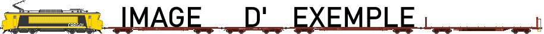

Nom du train - Nom de la livrée
Services :

Exemple
CARGO!


Cit&GO! comme toute entreprise ferroviaire respectable, possède du matériel ferroviaire adapté à ses relations.
Voici ici la liste du matériel utilisé avec leurs services d'affectations.
Liste et définition des services :
Les automotrices sont des trains indépendants, qui n'ont pas besoin d'une locomotive pour fonctionner


Les rames bloc sont des rames semblables à des automotrices. La diférence est que la rame est dotée d'une ou deux locomotives (moteur) et le reste est un "bloc" de voitures atachables à la locomotive pour former un train